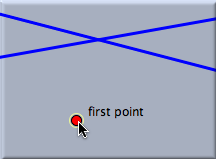
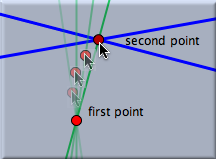
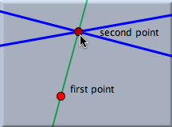

直線を加える

このモードで直線を描くには次の3つのステップを踏まなければいけません。:
- マウスのボタンを押す と最初の点が生成されます。 最初の点の場所はボタンが押されたマウスの位置で決まり、これは直線が描かれるまで変更することはできません。
- もしすでに存在する点の上でマウスのボタンが押されたならば、その点が1つ目の点として選ばれます。
- もしマウスのボタンが2つの要素(直線、円、2次曲線)の交わりの上で押されたならば、その交点が新しく追加され、そしてそれが1つ目の点となります。
- もしマウスのボタンが一本の直線(または円)の上で押された場合、その点はその直線(または円)を自由に動ける自由点として追加され、かつ1つ目の点となります。
- それ以外の場合は、自由点が1つ目の点となります。
- マウスをドラッグする と、2つ目の点と2点を結ぶ直線が描かれます。 最初の点と同じようにして、2つ目の点もマウスの場所で決まります。 点を加える ときと同じように、すでにある要素に近づけるとスナップします。 1つ目の点を決める時と要領は同じです。 スナップした時にはその要素はハイライトされます。
- マウスのボタンを離す と2つ目の点の場所が決まります。 こうして直線を引く作業が完了します。
下の図は自由点からある2直線の交点までを結ぶ直線を引くときの3つのステップを示しています。ここで1つ目の点は自由点で2つ目の点はすでにある２直線の交点です。
|
マウスのボタンを押す | ドラッグして・・・ | そして離す |
||
 |  |  |
||
要約
「押す、ドラッグする、離す」の一連の動作で決まる2点を結ぶ直線を描く。
こちらも参照してください
Page last modified on Tuesday 02 of August, 2011 [12:26:38 UTC].
The original document is available at
http://doc.cinderella.de/tiki-index.php?page=Add%20a%20LineJ